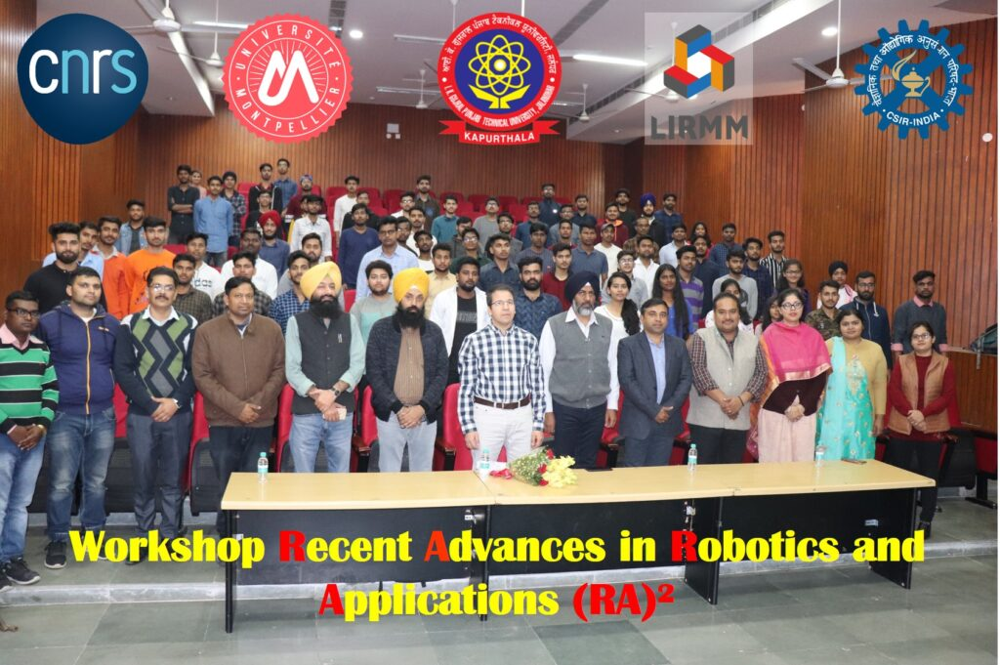

ICONIC
MORE ABOUT PTU
I.K.Gujral Punjab Technical University (IKGPTU) was established by an Act of State Legislature on 16th January, 1997, to promote technical, management and pharmaceutical education in the state at degree level and above. It was established as Punjab Technical University and renamed as I.K.Gujral Punjab Technical University by State Government in the honor to Late Sh. Inder Kumar Gujral, Former Prime Minister of India, in 2015. The University has the mandate to set up centres of excellence in emerging technologies and for promoting training, research and development in these areas. The University has undertaken the task of training students to help in the development of skilled manpower in this sector in the country in general and in the state in particular. With this goal in mind, the university is promoting a number of courses in different streams in regular as well as distance education programmes. At present University have 121 AICTE and 65 UGC institutes affiliated with it.
IKGPTU is undertaking and supervising the instructions and award of 30+ bachelor’s degrees in Engineering & Technology & 20+ in non-AICTE & UGC courses. The University has a land area of 78.16 acres & it owns more than 10 campuses throughout the state of Punjab. University started its journey with 09 Engineering & 05 Management colleges. IKGPTU has its own learning centers under Distance Education Programme. The University has a rich strength of lakhs of students, which also includes 1,500+ international students from 30+ countries. I.K.Gujral Punjab Technical University (PTU) has bagged the much coveted Best Technical University Award for the year 2013. The Award, instituted by Indian Society for Technical Education (ISTE) and Kalinga Institute of Industrial Technology (KIIT) it is best university in punjab the present nirf rankign in india is 120 it reduces this year